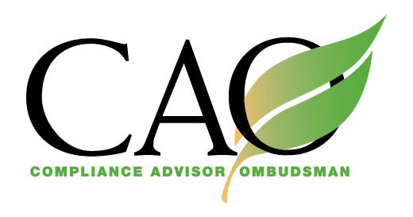

More Information
CAO's reports, findings, and case updates are available on CAO's website. All other public documents, including CAO Advisory Notes and past Annual Reports, also are available in hard copy. CAO's Operational Guidelines are available in the seven official languages of the World Bank Group. Further resources on how to file a complaint are available in additional languages on CAO's website. For more information, see www.cao-ombudsman.org.
Independent Accountability Mechanism for the International Finance Corporation (IFC) and Multilateral Investment Guarantee Agency (MIGA), Members of the World Bank Group.

Rights and Permissions
The material on this site is copyrighted. Copying and/or transmitting portions or all of this work without permission may be a violation of applicable law. CAO encourages dissemination of its work and will normally grant permission to reproduce portions of the work promptly.
For permission please send a request with complete information using our contact information. All other queries on rights and licenses, including subsidiary rights, should also be addressed to the Office of the CAO.
The findings, interpretations, and conclusions expressed are those of the author(s) and do not necessarily reflect the views of the Executive Directors of the World Bank Group or the governments they represent.
CAO does not guarantee the accuracy of the data included in this work. The boundaries, colors, denominations, and other information shown on any map in this work do not imply judgement on the part of CAO concerning the legal status of any territory or the endorsement or acceptance of such boundaries.